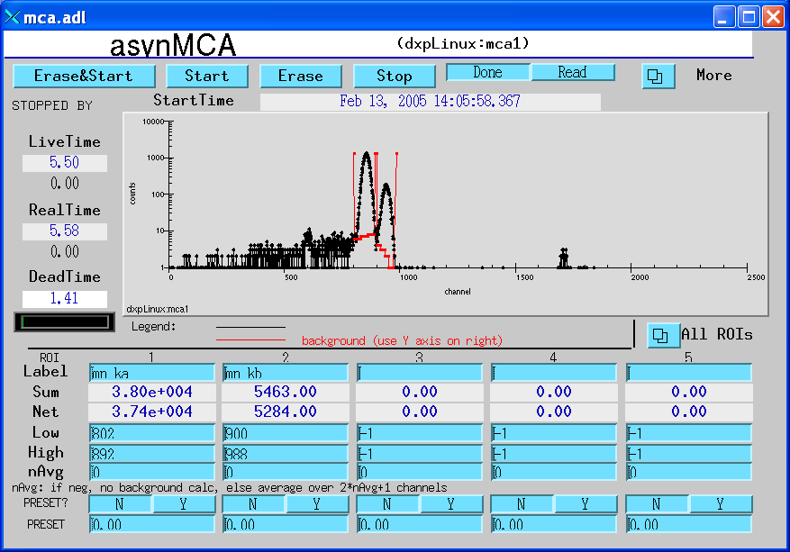

The example IOC directory, iocSaturn, creates EPICS process variables with names like dxpSaturn:dxp1.PKTIM, where dxpSaturn is the "prefix" for the process variable names, dxp1 is the DXP record name, and PKTIM is the field name. This is fine for installations where there will be at most one Saturn on the subnet. However, in many cases there will be the possibility of more than one Saturn running EPICS on the same subnet. If this is the case then it is essential that each one use a different prefix, because EPICS process variable names must be unique on a subnet. Here is how to give your Saturn a unique name, and still be able to upgrade the EPICS software easily. It is recommended that you follow these instructions even if you don't have name conflicts on your IOC, so that files you edit are in a directory that will not be overwritten when you upgrade the EPICS software.
- Make a copy of the iocSaturn directory. Let's assume you will make your prefix be mySaturn:, so a good name for the directory would be iocmySaturn/.
- Edit all files in that directory (including st.cmd, auto_settings.req, and START_IOC*), changing all occurances of dxpSaturn: to mySaturn:.
- If you have created any higher-level medm screens that load the medm screens in this package, you will need to edit them to pass the new prefix, mySaturn:
- The next time you unpack a new version of the EPICS DXP software it will overwrite the iocSaturn directory. However, if you have made your own new directory, mySaturn/, that will not be modified.
The EPICS DXP application uses the EPICS save/restore facility. This means that all of the important parameters that you might change when running the Saturn are saved in files in the subdirectory called autosave/ under your IOC directory. These parameters include the peaking time, the update rates for displays and nearly 200 other parameters. The next time you start EPICS it will restore these values automatically from the file called autosave/auto_settings.sav. It is a good idea to make copies of this file from time to time so that you can get back to old settings if the file is lost or corrupted.
Saturn startup script
The following is a typical startup script for the Saturn.
#########################################
< envPaths
# Tell EPICS all about the record types, device-support modules, drivers,
# etc. in this build from dxpApp
dbLoadDatabase("../../dbd/dxp.dbd")
dxp_registerRecordDeviceDriver(pdbbase)
# On Linux execute the following command so that libusb uses /dev/bus/usb
# as the file system for the USB device.
# On some Linux systems it uses /proc/bus/usb instead, but udev
# sets the permissions on /dev, not /proc.
epicsEnvSet USB_DEVFS_PATH /dev/bus/usb
# Initialize the XIA software
# Set logging level (1=ERROR, 2=WARNING, 3=XXX, 4=DEBUG)
xiaSetLogLevel(2)
# Edit saturn.ini to match your Saturn speed (20 or 40 MHz),
# pre-amp type (reset or RC), and interface type (EPP, USB 1.0, USB 2.0)
xiaInit("saturn.ini")
xiaStartSystem
# DXPConfig(serverName, ndetectors, ngroups, pollFrequency)
DXPConfig("DXP1", 1, 1, 100)
# DXP record
# Execute the following line if you have a Vortex detector or
# another detector with a reset pre-amplifier
dbLoadRecords("../../dxpApp/Db/dxp2x_reset.db","P=dxpSaturn:, R=dxp1, INP=@asyn(DXP1 0)")
# Execute the following line if you have a Ketek detector or
# another detector with an RC pre-amplifier
#dbLoadRecords("../../dxpApp/Db/dxp2x_rc.db","P=dxpSaturn:, R=dxp1, INP=@asyn(DXP1 0)")
# MCA record
dbLoadRecords("$(MCA)/mcaApp/Db/mca.db", "P=dxpSaturn:, M=mca1, DTYP=asynMCA,INP=@asyn(DXP1 0),NCHAN=2048")
dbLoadRecords("../../dxpApp/Db/mcaCallback.db", "P=dxpSaturn:, M=mca1,INP=@asyn(DXP1 0)")
# Template to copy MCA ROIs to DXP SCAs
dbLoadTemplate("roi_to_sca.substitutions")
# Setup for save_restore
< ../save_restore.cmd
save_restoreSet_status_prefix("dxpSaturn:")
dbLoadRecords("$(AUTOSAVE)/asApp/Db/save_restoreStatus.db", "P=dxpSaturn:")
set_pass0_restoreFile("auto_settings.sav")
set_pass1_restoreFile("auto_settings.sav")
### Scan-support software
# crate-resident scan. This executes 1D, 2D, 3D, and 4D scans, and caches
# 1D data, but it doesn't store anything to disk. (See 'saveData' below for that.)
dbLoadRecords("$(SSCAN)/sscanApp/Db/scan.db","P=dxpSaturn:,MAXPTS1=2000,MAXPTS2=1000,MAXPTS3=10,MAXPTS4=10,MAXPTSH=2048")
# Debugging flags
#xiaSetLogLevel(4)
#asynSetTraceMask DXP1 0 255
#var mcaRecordDebug 10
#var dxpRecordDebug 10
iocInit
### Start up the autosave task and tell it what to do.
# Save settings every thirty seconds
create_monitor_set("auto_settings.req", 30, P=dxpSaturn:)
### Start the saveData task.
saveData_Init("saveData.req", "P=dxpSaturn:")
#########################################
Here are some comments on the commands in this file.
######################################### < envPaths #########################################This command loads the envPaths file that defines the paths to other EPICS modules. You will need to edit this file if you installed the pre-built binaries rather than building from source code.
#########################################
dbLoadDatabase("../../dbd/dxp.dbd")
dxp_registerRecordDeviceDriver(pdbbase)
#########################################
These commands load the EPICS database definition files.
# On Linux execute the following command so that libusb uses /dev/bus/usb # as the file system for the USB device. # On some Linux systems it uses /proc/bus/usb instead, but udev # sets the permissions on /dev, not /proc. epicsEnvSet USB_DEVFS_PATH /dev/bus/usbThis command forces libusb to use the /dev/bus/usb filesystem, rather than /proc/bus/usb, which some kernels use by default. This is needed because udev sets permissions on /dev/bus/usb, not /proc/bus/usb.
#########################################
# Initialize the XIA software
# Set logging level (1=ERROR, 2=WARNING, 3=XXX, 4=DEBUG)
xiaSetLogLevel(2)
# Edit saturn.ini to match your Saturn speed (20 or 40 MHz),
# pre-amp type (reset or RC), and interface type (EPP, USB 1.0, USB 2.0)
xiaInit("saturn.ini")
xiaStartSystem
#########################################
These commands set the logging (debugging) level for the XIA Handel software. It initializes the XIA software
with the appropriate .ini file, and then starts the XIA software. You will hear clicking in the Saturn box
when the xiaStartSystem command is executing.
#########################################
# DXPConfig(serverName, ndetectors, ngroups, pollFrequency)
DXPConfig("DXP1", 1, 1, 100)
#########################################
This command starts the EPICS "asyn" server called DXP1. It defines the number of detectors in the system,
and the number of detector groups. We use 1 detector group (containing all of the detectors) to efficiently
do operations that should be done on all detectors simultaneously. The pollFrequency determines the rate
at which the poller thread will check for acquisition complete. 100 Hz is typical, it does not put a significant
load on the system, but reduces the average latency in determining when the run is complete to 5ms.
#########################################
# DXP record
# Execute the following line if you have a Vortex detector or
# another detector with a reset pre-amplifier
dbLoadRecords("../../dxpApp/Db/dxp2x_reset.db","P=dxpSaturn:, R=dxp1, INP=@asyn(DXP1 0)")
# Execute the following line if you have a Ketek detector or
# another detector with an RC pre-amplifier
#dbLoadRecords("../../dxpApp/Db/dxp2x_rc.db","P=dxpSaturn:, R=dxp1, INP=@asyn(DXP1 0)")
# MCA record
dbLoadRecords("$(MCA)/mcaApp/Db/mca.db", "P=dxpSaturn:, M=mca1, DTYP=asynMCA,INP=@asyn(DXP1 0),NCHAN=2048")
dbLoadRecords("../../dxpApp/Db/mcaCallback.db", "P=dxpSaturn:, M=mca1,INP=@asyn(DXP1 0)")
# Template to copy MCA ROIs to DXP SCAs
dbLoadTemplate("roi_to_sca.substitutions")
#########################################
These commands load the EPICS databases for the MCA and DXP records. The names of the PV, the number of MCA channels,
and the type of detector pre-amp are all chosen in these commands. The mcaCallback.db file is used with
the poller to cause the MCA records to read data when acquisition completes.
#########################################
# Setup for save_restore
< ../save_restore.cmd
save_restoreSet_status_prefix("dxpSaturn:")
dbLoadRecords("$(AUTOSAVE)/asApp/Db/save_restoreStatus.db", "P=dxpSaturn:")
set_pass0_restoreFile("auto_settings.sav")
set_pass1_restoreFile("auto_settings.sav")
### Scan-support software
# crate-resident scan. This executes 1D, 2D, 3D, and 4D scans, and caches
# 1D data, but it doesn't store anything to disk. (See 'saveData' below for that.)
dbLoadRecords("$(SSCAN)/sscanApp/Db/scan.db","P=dxpSaturn:,MAXPTS1=2000,MAXPTS2=1000,MAXPTS3=10,MAXPTS4=10,MAXPTSH=2048")
#########################################
These commands initialize the save/restore system that remembers changes in parameter settings when the IOC is rebooted.
They load the databases for general purpose scanning to be done in the IOC. The maximum number of points in each nested
scan is defined here, as is the maximum number of channels of MCA data that can be stored in the scanH record.
######################################### # Debugging flags #xiaSetLogLevel(4) #asynSetTraceMask DXP1 0 255 #var mcaRecordDebug 10 #var dxpRecordDebug 10 #########################################These commands set the debugging level of the EPICS software. asynSetTraceMask controls the debugging in drvDXP and devDXP. This uses the asynTrace facility, with different bits turning on different types of output. 1 turns on only error reporting, 255 turns on all messages. mcaRecordDebug and dxpRecordDebug turn on messages from the mcaRecord and dxpRecord respectively. 0 turns off messages, 10 turns on all messages.
#########################################
iocInit
### Start up the autosave task and tell it what to do.
# Save settings every thirty seconds
create_monitor_set("auto_settings.req", 30, P=dxpSaturn:)
### Start the saveData task.
saveData_Init("saveData.req", "P=dxpSaturn:")
#########################################
These commands start the EPICS software (iocInit), and start the save/restore software saving parameters every 30 seconds,
and start the task that saves data from the scan records. Edit the file saveData.req to change what additional EPICS
PVs are saved with every scan. You might want to include the MCA record energy calibration fields, etc.
Note that there is a different startup scripts, st_med.st, and a corresonding .adl file, 1element_dxp.adl. This startup script and medm display is almost identical to the st.cmd and single_element_dxp.adl medm display. The difference is that it uses PVs to control acquisition that are compatible with the multi-element databases used by the DXP2X and xMAP. Client software that is configured to work with the multi-element detectors will work with the Saturn if this startup script is used.
Saturn medm screens
The following are screen shots of the medm screens provided for the Saturn.
single_dxp_top.adl
Main control screen for Saturn.

dxp.adl
Complete screen for low-level DXP parameters and control.

dxp_sca.adl
Screen for SCA display and control.

mca.adl
Screen to display the spectral data and control acquisition.

dxp_baseline.adl
Screen to display the baseline histogram and control its update rate.
dxp_baseline_history.adl
Screen to display the baseline history and control its update rate.

dxp_trace.adl
Screen to display the ADC trace, and control the time per point and update rate.

Installing EPICS for the xMAP
To install the EPICS DXP software with an xMAP system on a Windows computer do the following:
- Follow the instructions for installing the Saturn on Windows. The Windows Port I/O driver needs to be installed, even though the xMAP does not use the EPP port, because the dxpApp application is linked with that DLL. Also, where the directions say iocBoot/iocSaturn use iocBoot/iocXMAP instead.
- Install the PCI/PXI converter from National Instruments.
- Install the National Instruments driver software.
- Install the latest version of the xManager software from XIA. The EPICS software distribution includes the xManager DLLs that are required for the EPICS software. However, xManager installs a Windows driver that is not included with the EPICS software. It can also be useful to have xManager available on the computer to compare with the EPICS software.
- In configuring xManager you will have created a .ini file describing the PCI slots for each xMAP, etc. You can copy that file to the iocXMAP directory or edit one of the .ini files there that most closely matches your system configuration (xmap4.ini, xmap8.ini, etc.).
- Make a copy of the iocXMAP directory. Let's assume you will make your prefix be myXMAP:, so a good name for the directory would be iocmyXMAP/.
- Edit all files in that directory (including *.cmd, auto_settings*.req, *.template, and START_IOC*), changing all occurances of dxpXMAP: to myXMAP:.
- If you have created any higher-level medm screens that load the medm screens in this package, you will need to edit them to pass the new prefix, myXMAP:
- The next time you unpack a new version of the EPICS DXP software it will overwrite the iocXMAP directory. However, if you have made your own new directory, myXMAP/, that will not be modified.
Running the xMAP
There are several things that should be done to run xMAP system under the EPICS software.
- There are startup scripts and template files for systems with 4, 8, 12, or 16 channels (1, 2, 3, or 4 xMAP modules). If you have a different number of channels you will need to create new files.
- You can manually start the software by doing the following in the Cygwin bash shell:
cd iocBoot/iocXMAP # Or the new directory you created ../../bin/cygin-x86/dxpApp.exe 16element.cmd # Or 4element.cmd, etc. - You can also start the EPICS IOC and medm by running the batch file iocBoot/iocXMAP/START_IOC.bat. This can be done by double clicking on the icon for this file. You should see the EPICS IOC commands in a Windows command shell, and you should hear clicking sounds from the xMAPS. If everything works correctly, you can then begin to collect and display spectra.
- You can do scans and save complete spectra with the EPICS sscan and saveData facilities.
xMAP startup script
The following is a typical startup script for the xMAP.
#########################################
< envPaths
# Tell EPICS all about the record types, device-support modules, drivers,
# etc. in this build from dxpApp
dbLoadDatabase("$(DXP)/dbd/dxp.dbd")
dxp_registerRecordDeviceDriver(pdbbase)
# Setup for save_restore
< ../save_restore.cmd
save_restoreSet_status_prefix("dxpXMAP:")
dbLoadRecords("$(AUTOSAVE)/asApp/Db/save_restoreStatus.db", "P=dxpXMAP:")
set_pass0_restoreFile("auto_settings16.sav")
set_pass1_restoreFile("auto_settings16.sav")
# Set logging level (1=ERROR, 2=WARNING, 3=INFO, 4=DEBUG)
xiaSetLogLevel(2)
xiaInit("xmap16.ini")
xiaStartSystem
# DXPConfig(serverName, ndetectors, ngroups, pollFrequency)
DXPConfig("DXP1", 16, 1, 100)
dbLoadTemplate("16element.template")
#xiaSetLogLevel(4)
#asynSetTraceMask DXP1 0 255
#asynSetTraceIOMask DXP1 0 2
#var dxpRecordDebug 10
### Scan-support software
# crate-resident scan. This executes 1D, 2D, 3D, and 4D scans, and caches
# 1D data, but it doesn't store anything to disk. (See 'saveData' below for that.)
dbLoadRecords("$(SSCAN)/sscanApp/Db/scan.db","P=dxpXMAP:,MAXPTS1=2000,MAXPTS2=1000,MAXPTS3=10,MAXPTS4=10,MAXPTSH=2048")
iocInit
seq dxpMED, "P=dxpXMAP:, DXP=dxp, MCA=mca, N_DETECTORS=16"
### Start up the autosave task and tell it what to do.
# Save settings every thirty seconds
create_monitor_set("auto_settings16.req", 30, "P=dxpXMAP:")
### Start the saveData task.
saveData_Init("saveData.req", "P=dxpXMAP:")
Here are some comments on the commands in this file.
< envPaths #########################################This command loads the envPaths file that defines the paths to other EPICS modules. You will need to edit this file if you installed the pre-built binaries rather than building from source code.
#########################################
# Tell EPICS all about the record types, device-support modules, drivers,
# etc. in this build from dxpApp
dbLoadDatabase("$(DXP)/dbd/dxp.dbd")
dxp_registerRecordDeviceDriver(pdbbase)
#########################################
These commands load the EPICS database definition files.
#########################################
# Setup for save_restore
< ../save_restore.cmd
save_restoreSet_status_prefix("dxpXMAP:")
dbLoadRecords("$(AUTOSAVE)/asApp/Db/save_restoreStatus.db", "P=dxpXMAP:")
set_pass0_restoreFile("auto_settings16.sav")
set_pass1_restoreFile("auto_settings16.sav")
#########################################
These commands initialize the save/restore system that remembers changes in parameter settings when the IOC is rebooted.
#########################################
# Set logging level (1=ERROR, 2=WARNING, 3=INFO, 4=DEBUG)
xiaSetLogLevel(2)
xiaInit("xmap16.ini")
xiaStartSystem
#########################################
These commands set the logging (debugging) level for the XIA Handel software. It initializes the XIA software
with the appropriate .ini file, and then starts the XIA software. You will hear clicking in the xMAP modules
when the xiaStartSystem command is executing. The xamp16.ini file is the same type of file that xManager requires.
If you have xManager running on your system you can just copy that .ini file to your IOC directory for EPICS.
This file must be edited from the one that is distributed with the EPICS software to define the PCI bus slots
in your PXI crate.
#########################################
# DXPConfig(serverName, ndetectors, ngroups, pollFrequency)
DXPConfig("DXP1", 16, 1, 100)
#########################################
This command starts the EPICS "asyn" server called DXP1. It defines the number of detectors in the system,
and the number of detector groups. We use 1 detector group (containing all of the detectors) to efficiently
do operations that should be done on all detectors simultaneously. The pollFrequency determines the rate
at which the poller thread will check for acquisition complete. 100 Hz is typical, it does not put a significant
load on the system, but reduces the average latency in determining when the run is complete to 5ms.
#########################################
dbLoadTemplate("16element.template")
#########################################
This command loads the template file that in turns loads the databases for the MCA and DXP records.
The content of the template file is discussed below.
######################################### # Debugging flags #xiaSetLogLevel(4) #asynSetTraceMask DXP1 0 255 #asynSetTraceIOMask DXP1 0 2 #var dxpRecordDebug 10 #########################################These commands set the debugging level of the EPICS software. asynSetTraceMask controls the debugging in drvDXP and devDXP. This uses the asynTrace facility, with different bits turning on different types of output. 1 turns on only error reporting, 255 turns on all messages. mcaRecordDebug and dxpRecordDebug turn on messages from the mcaRecord and dxpRecord respectively. 0 turns off messages, 10 turns on all messages.
#########################################
### Scan-support software
# crate-resident scan. This executes 1D, 2D, 3D, and 4D scans, and caches
# 1D data, but it doesn't store anything to disk. (See 'saveData' below for that.)
dbLoadRecords("$(SSCAN)/sscanApp/Db/scan.db","P=dxpXMAP:,MAXPTS1=2000,MAXPTS2=1000,MAXPTS3=10,MAXPTS4=10,MAXPTSH=2048")
#########################################
These commands load the databases for general purpose scanning to be done in the IOC. The maximum number of points in each nested
scan is defined here, as is the maximum number of channels of MCA data that can be stored in the scanH record.
#########################################
iocInit
seq dxpMED, "P=dxpXMAP:, DXP=dxp, MCA=mca, N_DETECTORS=16"
### Start up the autosave task and tell it what to do.
# Save settings every thirty seconds
create_monitor_set("auto_settings16.req", 30, "P=dxpXMAP:")
### Start the saveData task.
saveData_Init("saveData.req", "P=dxpXMAP:")
#########################################
The iocInit start the EPICS software. The seq command starts the dxpMED State-Notation-Language program that implements
the "Copy 1 To All" feature for the DXP records. It also copies MCA ROIs to DXP SCAs, and computes combined elapsed and live
times, etc. The last two commands start the save/restore task and start the task that saves data from the scan records.
Edit the file saveData.req to change what additional EPICS
PVs are saved with every scan. You might want to include the MCA record energy calibration fields, etc.
The 16element.template file looks like this:
#########################################
file "$(DXP)/dxpApp/Db/dxpMED.db"
{
pattern
{P, MCAALL, INP }
{dxpXMAP: mcaAll, "@asyn(DXP1,-1)"}
}
file "$(MCA)/mcaApp/Db/simple_mca.db"
{
pattern
{P, M, DTYP, INP PREC, CHANS}
{dxpXMAP: mca1 "asynMCA", "@asyn(DXP1,0)", 2, 2048}
{dxpXMAP: mca2 "asynMCA", "@asyn(DXP1,1)", 2, 2048}
{dxpXMAP: mca3 "asynMCA", "@asyn(DXP1,2)", 2, 2048}
{dxpXMAP: mca4 "asynMCA", "@asyn(DXP1,3)", 2, 2048}
{dxpXMAP: mca5 "asynMCA", "@asyn(DXP1,4)", 2, 2048}
{dxpXMAP: mca6 "asynMCA", "@asyn(DXP1,5)", 2, 2048}
{dxpXMAP: mca7 "asynMCA", "@asyn(DXP1,6)", 2, 2048}
{dxpXMAP: mca8 "asynMCA", "@asyn(DXP1,7)", 2, 2048}
{dxpXMAP: mca9 "asynMCA", "@asyn(DXP1,8)", 2, 2048}
{dxpXMAP: mca10 "asynMCA", "@asyn(DXP1,9)", 2, 2048}
{dxpXMAP: mca11 "asynMCA", "@asyn(DXP1,10)", 2, 2048}
{dxpXMAP: mca12 "asynMCA", "@asyn(DXP1,11)", 2, 2048}
{dxpXMAP: mca13 "asynMCA", "@asyn(DXP1,12)", 2, 2048}
{dxpXMAP: mca14 "asynMCA", "@asyn(DXP1,13)", 2, 2048}
{dxpXMAP: mca15 "asynMCA", "@asyn(DXP1,14)", 2, 2048}
{dxpXMAP: mca16 "asynMCA", "@asyn(DXP1,15)", 2, 2048}
{dxpXMAP: mcaAll "asynMCA", "@asyn(DXP1,-1)", 2, 2048}
}
# DXP records
file "$(DXP)/dxpApp/Db/xmap_reset.db"
{
pattern
{P, R, INP }
{dxpXMAP: dxp1 "@asyn(DXP1,0)"}
{dxpXMAP: dxp2 "@asyn(DXP1,1)"}
{dxpXMAP: dxp3 "@asyn(DXP1,2)"}
{dxpXMAP: dxp4 "@asyn(DXP1,3)"}
{dxpXMAP: dxp5 "@asyn(DXP1,4)"}
{dxpXMAP: dxp6 "@asyn(DXP1,5)"}
{dxpXMAP: dxp7 "@asyn(DXP1,6)"}
{dxpXMAP: dxp8 "@asyn(DXP1,7)"}
{dxpXMAP: dxp9 "@asyn(DXP1,8)"}
{dxpXMAP: dxp10 "@asyn(DXP1,9)"}
{dxpXMAP: dxp11 "@asyn(DXP1,10)"}
{dxpXMAP: dxp12 "@asyn(DXP1,11)"}
{dxpXMAP: dxp13 "@asyn(DXP1,12)"}
{dxpXMAP: dxp14 "@asyn(DXP1,13)"}
{dxpXMAP: dxp15 "@asyn(DXP1,14)"}
{dxpXMAP: dxp16 "@asyn(DXP1,15)"}
#{dxpXMAP: dxpAll "@asyn(DXP1,-1)"}
}
#########################################
This file defines the mca and DXP records that get loaded. It defines the maximum number of channels in the MCA
records. It also loads the multi-element DXP database (dxpMED.db). This database is used with the dxpMED.st SNL
program to do collective actions on multiple DXP or MCA records.
Note that there are supplied startup scripts, template files and auto_settings.req files for 4, 8, 12, and 16 channel xMAP systems. If you have a different number of channels you need to create your own files using these as examples. There are currently only medm screens for a 16-element detector system. You will need to copy and edit these for different numbers of detectors. For fewer detectors than 16 you can simply use the 16element files temporarily and ignore the ugly white fields for non-existant records!
xMAP medm screens
The following are screen shots of the medm screens provided for the xMAP.
16element_dxp.adl
Main control screen for 16element xMAP system.
16element_dxp_a;;.adl
Complete screen for low-level DXP parameters and control.
16element_dxp_statistics.adl
Screen to display trigger counts and events in run, plus ICR and OCR.
16element_ROI_SCA.adl
Screen to display ROI and SCA counts for a single ROI/SCA on each detector.
16element_cal.adl
Screen to display energy calibration parameters for each detector.
16element_time.adl
Screen to display preset and elapsed times for each detector.
16element_plots.adl
Screen to display the spectral data for each detector.
16element_baseline.adl
Screen to display the baseline histograms and control the update rate.
16element_history.adl
Screen to display the baseline histories and control the update rate.
16element_trace.adl
Screen to display the ADC traces, and control the time per point and update rate.
Installing the DXP2X
The DXP4C2X CAMAC module is supported under vxWorks. It works with the Kinetic Systems 3922/2922 VME to CAMAC adapter.
The example IOC directory, iocDXP2X, creates EPICS process variables with names like dxp2X:dxp1.PKTIM, where dxp2X: is the "prefix" for the process variable names, dxp1 is the DXP record name, and PKTIM is the field name. This is OK for installations where there will be at most one DXP2X system on the subnet. However, in many cases there will be the possibility of more than one DXP2X running EPICS on the same subnet. If this is the case then it is essential that each one use a different prefix, because EPICS process variable names must be unique on a subnet. Here is how to give your DXP2X system a unique name, and still be able to upgrade the EPICS software easily. It is recommended that you follow these instructions even if you don't have name conflicts on your IOC, so that files you edit are in a directory that will not be overwritten when you upgrade the EPICS software.
- Make a copy of the iocDXP2X directory. Let's assume you will make your prefix be myDXP2X:, so a good name for the directory would be iocmyDXP2X/.
- Edit all files in that directory (including *.cmd, auto_settings*.req, *.template, and START_IOC*), changing all occurances of dxp2X: to myDXP2X:.
- If you have created any higher-level medm screens that load the medm screens in this package, you will need to edit them to pass the new prefix, myDXP2X:
- The next time you unpack a new version of the EPICS DXP software it will overwrite the iocDXP2X directory. However, if you have made your own new directory, myDXP2X/, that will not be modified.
- There are example startup scripts (e.g. 4element.cmd), Handel initialization files (e.g. 4element_reset.ini), database templates (e.g. 4element.template), and autosave request files (e.g. auto_settings4.req) for 4, 8, 12 and 16 element systems. The .ini file will almost certainly need to be edited to match your detector and CAMAC configuration.
Software Architecture
The overall architecture of the EPICS DXP software is shown in the diagram below. At the top level are EPICS Channel Access client applications, such as the IDL MCA Display program, the IDL Multi-Element Detector (MED) Display program, medm, spec, and others.
At the next level is the dxpMED State Notation Language program, which is used to synchronize acquisition and settings for multi-element detectors. This program also uses EPICS Channel Access, but it typically runs in the same EPICS IOC that is controlling the XIA hardware.
Next are the DXP and MCA records, which communicate with device support. In the case of the MCA record, this device support is devMcaAsyn, which is itself device-independent, and talks to drvDxp. The device support for the dxpRecord is specific to the XIA hardware. drvDxp and devDxp both communicate with the XIA Handel library, which calls the XIA Xerxes library. Xerxes calls the machine dependent libraries, md_epics and md_win95, which call the operating system specific hardware libraries to perform the actual low-level I/O.
The poller thread rapidly polls the acquisition status (acquiring or done) while acquisition is in progress. This thread issues callbacks when acquisition is complete to records that have registered with it. It is used to minimize latencies, so that the MCA records will be processed when acquisition completes without the MCA records themselves having to process rapidly. The poll rate is set in the DXPConfig() command in the startup script. It is typically set to 100Hz, which does not significantly load the system, but provides a 5msec average latency in determining when acquisition is complete.
Performance
Tests were done with R2-7 of the dxp module to measure the performance of the Saturn and xMAP systems in rapidly collecting complete spectra in a scan. The tests were done with the following conditions:- Cygwin architecture on Windows. This is currently required for the saveData software.
- 2048 channel spectra
- 0.01 second acquisition time, in order to attain real data but with minimal overhead.
- EPICS scan records.
- The inner scan was the scanH record, which had its detector trigger configured to .mca.ERST (Saturn) or EraseStart (xMAP) in the mca/dxp database. Its detectors were configured to collect spectra from the MCA records. The Saturn collected 1 MCA spectrum at each scan point, the xMAP collected 4, 8, 12 or 16 spectra at each scan point.
- The outer scan was the scan1 record. It had no positioner drive PV to minimize overhead. The detector trigger was scanH.EXSC. Its detectors were ElapsedReal, ElapsedLive, and the first ROI, mca1.R0.
- The scan fields of the MCA status, MCA read, and DXP read records were Passive to minimize overhead. The poller thread was running at 100 Hz, and caused the MCA records to be processed when acquisition was complete.
- saveData was used to save the scan data to a local hard disk, not across the network.
- 1000 scan points were collected. There were no positioner or detector delays in the scan records.
- The scan records were running on the same IOC as the DXP software.
- The system configuration is shown in the screen shot below.
Note that these measurements were made using the simple unbuffered mode on the xMAP. The xMAP has 4MB of onboard memory per channel, and the release 0.9.1 firmware allows one to use this memory to buffer many spectra, in response to a software or hardware trigger signal. This can be used to rapidly acquire many spectra, and then read them out quickly at the end. The EPICS software does not yet support this feature, but will in a future release.
Performance Measurements
| XIA system | Number of detectors | Seconds/1000 scan points | Scan points/second | Total spectra/second | Data rate (MB/second) |
|---|---|---|---|---|---|
| Saturn (EPP) | 1 | 30.1 | 33.2 | 33.2 | 0.27 |
| Saturn (USB 1.0) | 1 | 80.5 | 12.4 | 12.4 | 0.10 |
| Saturn (USB 2.0) | 1 | 23.5 | 42.6 | 42.6 | 0.35 |
| xMAP | 4 (1 xMAP) | 45.7 | 21.9 | 87.5 | 0.72 |
| xMAP | 8 (2 xMAPs) | 50.8 | 19.7 | 157.5 | 1.29 |
| xMAP | 12 (3 xMAPs) | 61.7 | 16.2 | 194.5 | 1.59 |
| xMAP | 16 (4 xMAPs) | 78.1 | 12.8 | 204.9 | 1.68 |
Suggestions and comments to: Mark Rivers : (rivers@cars.uchicago.edu)